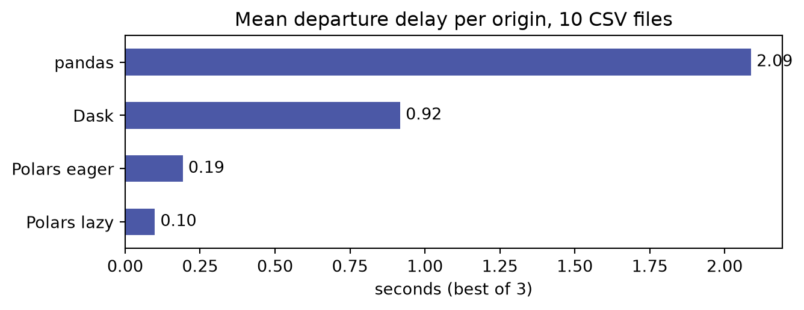

import os, glob, time
import pandas as pd
import polars as pl
import dask.dataframe as dd
DATA_DIR = "_data/dask"
csvs = os.path.join(DATA_DIR, "nycflights", "*.csv")
# Specify dtypes in order to avoid errors
dtypes_pd = {"TailNum": str, "CRSElapsedTime": float, "Cancelled": bool}
dtypes_pl = {"TailNum": pl.String, "CRSElapsedTime": pl.Float64}Polars vs Dask: a quick comparison
One query, four engines, on the NYC flights data from the Dask lecture
Scaling difference
Preparation
We use the same data as the Dask tutorial lecture: ten CSV files of flights out of New York, 1990–1999, about 2.6 million rows and 224 MB.
Set DATA_DIR to the folder where you unzipped dask_data.zip.
We’ll use the query from the lecture: mean departure delay per origin airport, non-cancelled flights only.
Comparison
1. Pandas
Everything happens in memory on one core.
def q_pandas():
df = pd.concat(pd.read_csv(f, dtype=dtypes_pd) for f in sorted(glob.glob(csvs)))
return df[~df.Cancelled].groupby("Origin").DepDelay.mean()
q_pandas()Origin
EWR 10.295469
JFK 10.351299
LGA 7.431142
Name: DepDelay, dtype: float642. Polars (eager)
Reading and group-by use all cores.
def q_polars_eager():
df = pl.read_csv(csvs, schema_overrides=dtypes_pl)
return (df.filter(pl.col("Cancelled") == 0)
.group_by("Origin")
.agg(pl.col("DepDelay").mean()))
q_polars_eager()
shape: (3, 2)
| Origin | DepDelay |
|---|---|
| str | f64 |
| "EWR" | 10.295469 |
| "LGA" | 7.431142 |
| "JFK" | 10.351299 |
3. Polars (lazy)
scan_csv reads nothing. It builds a query plan, which Polars optimises before it runs anything, as Dask does with its task graph.
def polars_lazy_query():
return (pl.scan_csv(csvs, schema_overrides=dtypes_pl)
.filter(pl.col("Cancelled") == 0)
.group_by("Origin")
.agg(pl.col("DepDelay").mean()))
print(polars_lazy_query().explain())AGGREGATE[maintain_order: false]
[col("DepDelay").mean()] BY [col("Origin")]
FROM
simple π 2/2 ["Origin", "DepDelay"]
Csv SCAN [_data/dask/nycflights/1990.csv, ... 9 other sources]
PROJECT 3/23 COLUMNS
SELECTION: col("Cancelled") == 0
ESTIMATED ROWS: 2637644Two optimisations are visible in the plan:
- projection pushdown (
PROJECT 3/23 COLUMNS): onlyCancelled,OriginandDepDelayare parsed; the other 20 columns are skipped while reading; - predicate pushdown (
SELECTION): the filter is applied inside the scan, so cancelled flights never reach the group-by.
def q_polars_lazy():
return polars_lazy_query().collect()
q_polars_lazy()
shape: (3, 2)
| Origin | DepDelay |
|---|---|
| str | f64 |
| "JFK" | 10.351299 |
| "LGA" | 7.431142 |
| "EWR" | 10.295469 |
4. Dask
Ten partitions (one per file), run in parallel on the default threaded scheduler.
def q_dask():
ddf = dd.read_csv(csvs, dtype=dtypes_pd)
return ddf[~ddf.Cancelled].groupby("Origin").DepDelay.mean().compute()
q_dask()Origin
EWR 10.295469
JFK 10.351299
LGA 7.431142
Name: DepDelay, dtype: float64Results
ref = q_pandas().sort_index()
for name, res in [("polars eager", q_polars_eager().to_pandas().set_index("Origin").DepDelay),
("polars lazy", q_polars_lazy().to_pandas().set_index("Origin").DepDelay),
("dask", q_dask())]:
pd.testing.assert_series_equal(res.sort_index(), ref, check_names=False,
check_index_type=False, check_dtype=False)
print("all results identical")all results identicalTiming
Each query runs three times and the fastest run is kept:
def best_of(f, n=3):
times = []
for _ in range(n):
t0 = time.perf_counter()
f()
times.append(time.perf_counter() - t0)
return min(times)
engines = {"pandas": q_pandas, "Polars eager": q_polars_eager,
"Polars lazy": q_polars_lazy, "Dask": q_dask}
csv_times = pd.Series({name: best_of(f) for name, f in engines.items()}, name="CSV (s)")
csv_times.round(3).to_frame()| CSV (s) | |
|---|---|
| pandas | 2.088 |
| Polars eager | 0.193 |
| Polars lazy | 0.099 |
| Dask | 0.918 |
Code
import matplotlib.pyplot as plt
ax = csv_times.sort_values().plot.barh(figsize=(7, 2.8), color="#4B58A6")
ax.set_xlabel("seconds (best of 3)")
ax.set_title("Mean departure delay per origin, 10 CSV files")
for i, v in enumerate(csv_times.sort_values()):
ax.text(v, i, f" {v:.2f}", va="center")
plt.tight_layout()
plt.show()
File formats
CSV vs Parquet:
pq = os.path.join(DATA_DIR, "nycflights.parquet")
pl.read_csv(csvs, schema_overrides=dtypes_pl).write_parquet(pq)
print(f"CSV: {sum(os.path.getsize(f) for f in glob.glob(csvs)) / 1e6:.0f} MB -> "
f"Parquet: {os.path.getsize(pq) / 1e6:.0f} MB")CSV: 235 MB -> Parquet: 28 MBparquet_engines = {
"pandas": lambda: (pd.read_parquet(pq, columns=["Cancelled", "Origin", "DepDelay"])
.query("Cancelled == 0").groupby("Origin").DepDelay.mean()),
"Polars eager": lambda: (pl.read_parquet(pq).filter(pl.col("Cancelled") == 0)
.group_by("Origin").agg(pl.col("DepDelay").mean())),
"Polars lazy": lambda: (pl.scan_parquet(pq).filter(pl.col("Cancelled") == 0)
.group_by("Origin").agg(pl.col("DepDelay").mean()).collect()),
"Dask": lambda: (dd.read_parquet(pq).query("Cancelled == 0")
.groupby("Origin").DepDelay.mean().compute()),
}
pq_times = pd.Series({name: best_of(f) for name, f in parquet_engines.items()},
name="Parquet (s)")
pd.concat([csv_times, pq_times], axis=1).round(3)| CSV (s) | Parquet (s) | |
|---|---|---|
| pandas | 2.088 | 0.075 |
| Polars eager | 0.193 | 0.063 |
| Polars lazy | 0.099 | 0.011 |
| Dask | 0.918 | 0.589 |
Exercises
- Compare it yourself. Interpret.
- Run the lazy query with
.collect(engine="streaming"). Does the time change? - Add a second grouping key (
UniqueCarrier) and a second aggregate (ArrDelaymean). How does the gap between engines change? - Start a
dask.distributed.Client(n_workers=4)before runningq_dask(). Is it faster or slower than the threaded scheduler on this data, and why? :::